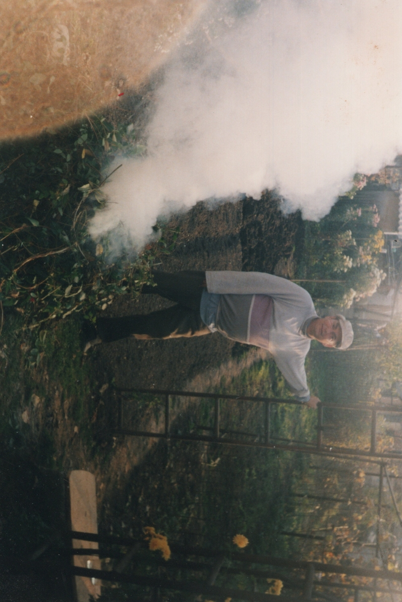
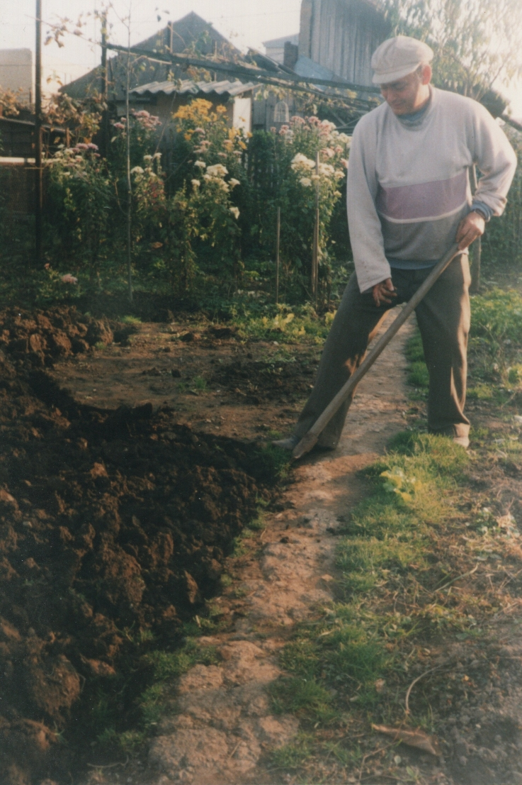
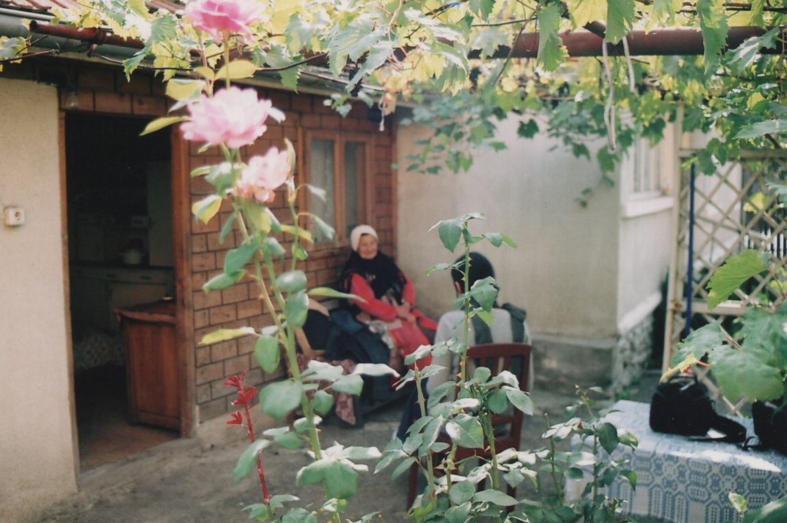
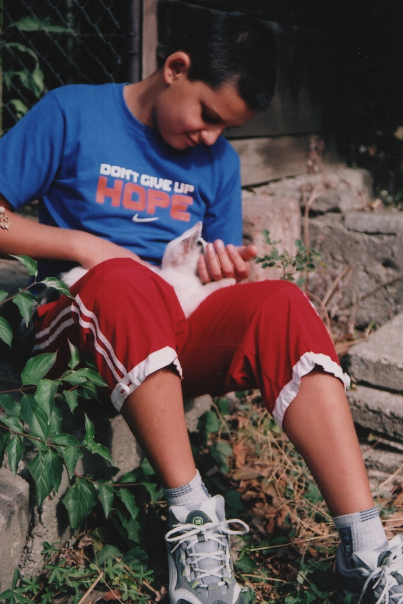
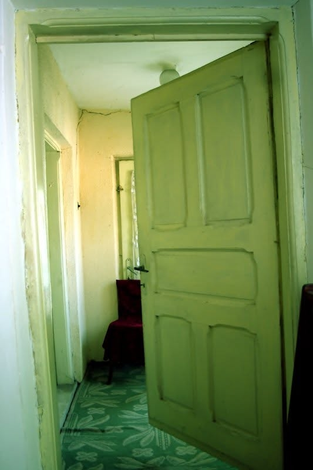
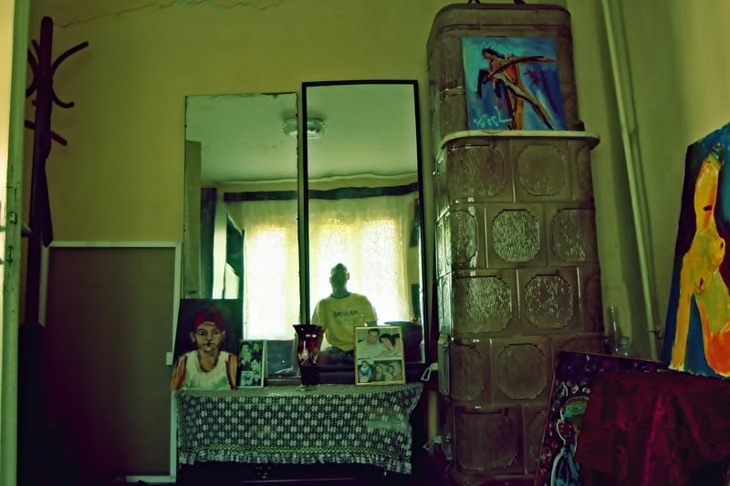
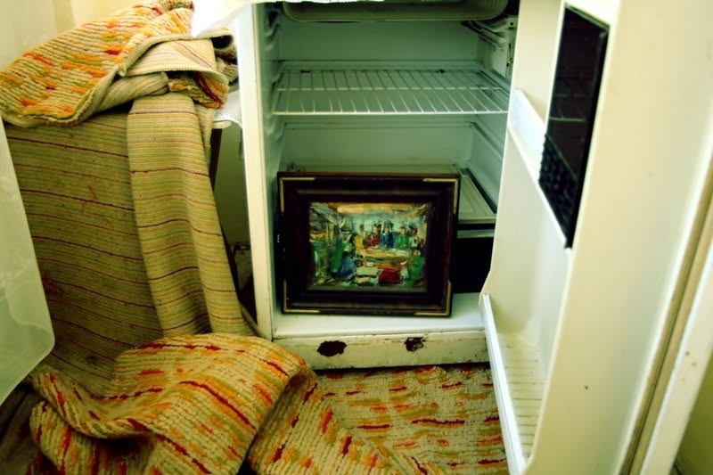
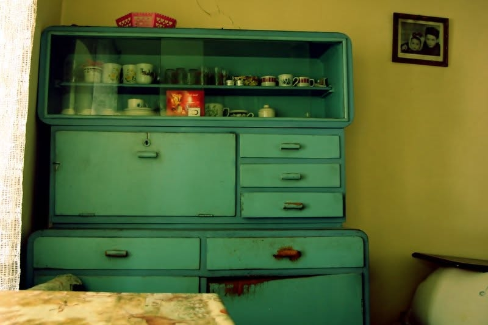
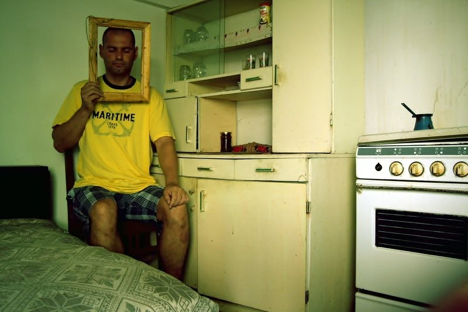

The Garden
The Garden explores one place across time. Made over more than two decades in the garden of my family's home in Romania, the work reflects on memory, absence and continuity through everyday moments, portraits and ordinary gestures. As generations change and the place itself transforms, the garden becomes a witness to what remains and what quietly disappears.








